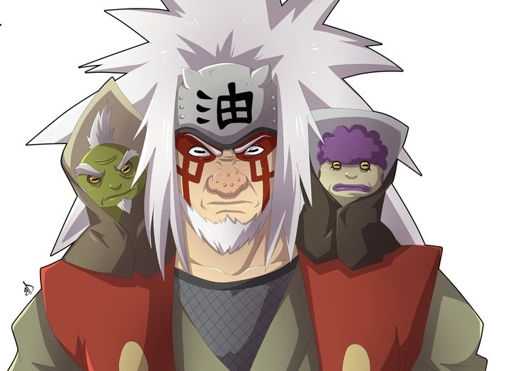
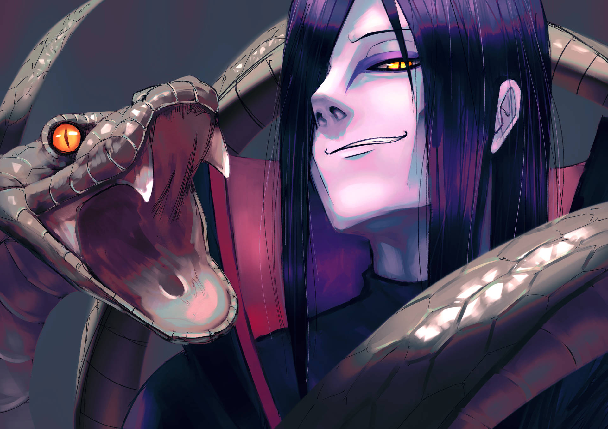
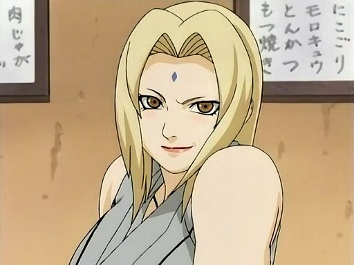

Sannin
Legendary Sannin — hero placeholders added.

Jiraiya
missing: anime1_jiraiya_hero.jpg

Orochimaru
missing: anime1_orochimaru_hero.jpg

Tsunade
missing: anime1_tsunade_hero.jpg
Back to Naruto Home